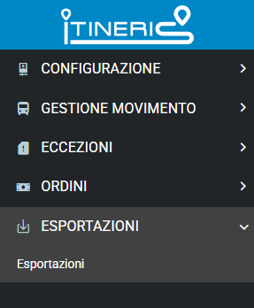

GUIDA SISTEMA ITINERIS
GUIDA SISTEMA ITINERIS
Home
Benvenuti sulla Guida per i Sistemi Itineris!
Siamo lieti di darvi il benvenuto sulla nostra guida completa per i sistemi Itineris.
Questo sito è stato appositamente creato per fornire un'ampia panoramica sulle funzionalità dei nostri sistemi, offrendo informazioni dettagliate e istruzioni chiare per una migliore comprensione e utilizzo.
Per navigare efficacemente su questo sito, vi invitiamo cordialmente ad utilizzare il menu sulla sinistra, qui troverete una serie di voci di menu che vi condurranno direttamente alle sezioni di vostro interesse.
Cliccando su una voce di menu, potrete accedere rapidamente alle informazioni desiderate.
È importante sottolineare che i sistemi Itineris sono stati sviluppati in collaborazione con il Consorzio Trasporti Puglia (COTRAP), volti al miglioramento dei servizi di trasporto pubblico nella regione.
Attraverso questa partnership, ci impegniamo a offrire soluzioni innovative e efficaci per migliorare la mobilità e la qualità della vita dei cittadini.
Vi ringraziamo per la vostra visita e vi auguriamo un'esperienza informativa e utile durante la vostra navigazione su questo sito.
GUIDA VELOCE
Questa sezione fornisce un riepilogo pratico delle operazioni fondamentali per configurare correttamente gli abbonamenti in Itineris.
PRE-REQUISITI
- Prepara uno schema mentale delle linee gestite
- Individua eventuali casi particolari o sovrapposizioni tra linee
COME SI ATTIVA UN ABBONAMENTO?
Menu: Gestione Movimento → Titoli di viaggio
Azioni: Abilita i tipi di abbonamento che desideri rendere disponibili.
- Gli abbonamenti possono essere gestiti per linea o per codice contabile.
- Se abiliti un titolo senza ulteriori configurazioni, sarà attivo su tutte le corse.
- Se gli stessi poli sono presenti in più linee, il sistema mostrerà solo l’abbonamento più costoso.
- È possibile escludere singoli poli da una linea.
- Per abbonamenti con un prezzo “atipico”, puoi forzare l’importo da:
Menu → Eccezioni → Eccezioni tariffarie abbonamenti.
ESEMPIO DI CONFIGURAZIONE
Scenario: Hai due linee attive:
- Linea 99 → Bari (partenza da via Capruzzi) → Lecce (con fermate in vari comuni)
- Linea 109 → Bari (partenza da Zona Industriale) → Lecce (con meno fermate)
Se il codice contabile del polo “Bari” è lo stesso per entrambe, il sistema proporrà solo l’abbonamento più costoso.

Soluzione
- Vai su Gestione Movimento → Poli
- Modifica il codice contabile del polo “Bari - Zona Industriale”
- Aggiungi una descrizione al polo, ad esempio:“Zona Industriale”
In questo modo sul sito shop https://biglietteria.cotrap.it/#/ricerca apparirà come: “Bari - Zona Industriale” - Ricordati di cliccare su “Pubblica” dopo aver salvato le modifiche
Risultato: In fase di acquisto l’utente vedrà:
- Bari – Lecce → 50€
- Bari (Zona Industriale) – Lecce → 20€
ESEMPIO DI CONFIGURAZIONE 2
Scenario: Sulla linea 99 è presente un passaggio tra Polignano e Brindisi che non si vuole includere nell'abbonamento 52 corse
Soluzione
- Vai su Menu: Gestione Movimento → Titoli di viaggio
- Clicca sul pulsante MODIFICA relativo all' Abb. Mensile/52
- Scorrere fino a Codici Contabili da escludere e inserire Il NOME del polo nel primo campo + eventuale Frazione e selezionare il Codice Contabile esatto dal menu' a tendina
- Ricordati di cliccare su “Pubblica” dopo aver salvato le modifiche con il tasto CONFERMA
INTRODUZIONE
OBIETTIVO DEL DOCUMENTO
Tale manuale ha lo scopo di guidare i consorziati nella creazione di una linea che sarà poi vendibile sul portale di vendita COTRAP e al conseguente controllo contabile e amministrativo del venduto.
SINTESI DEL DOCUMENTO
Il documento descrive le funzionalità del software Itineris, finalizzate alla gestione delle linee, corse e bigliettazione e delle interazioni con il portale di vendita COTRAP e app clienti. Pertanto sono state redatte due sezioni distinte: una dedicata al reparto commerciale e una al reparto contabile/amministrativo.
In particolare:
- Configurazione ed inserimento Linee
- Procedimento per gestione eccezioni tariffarie e di movimento
- Esportazione dati
- Controlli contabili
DESTINATARI
Il manuale è volto a supportare i Consorziati nella corretta gestione del caricamento Linee e corse sul software Itineris.
CONTENUTI
L'accesso al portale Itineris avviene cliccando sul seguente link: https://itinerisadminpanel.azurewebsites.net/ (consigliamo di memorizzarlo sulla barra dei preferiti) e richiede l'inserimento delle credenziali di accesso (ID utente e password) che sono forniti dall'Amministratore Cotrap a seguito della creazione della sezione dedicata al consorziato. È possibile recuperare la password in caso di dimenticanza cliccando sul tasto "recupero password" ed inserendo l'email di recupero (indicata preventivamente all'amministratore cotrap).
Attenzione: saranno forniti al consorziato due account: uno relativo alla sezione contabile ed uno relativo alla sezione commerciale.
Una volta effettuato l'accesso sarà visualizzata la pagina principale in cui sarà possibile visionare in basso a sinistra il profilo con cui avete effettuato l'accesso (es. commerciale e il nome dell'azienda).
In questo manuale sarà visualizzato il profilo cotrap, ma ha validità per tutti i consorziati.
REQUISITI MINIMI
I requisiti minimi per l'utilizzo del software sono:
- Connessione internet
- Browser privilegiato Google Chrome.
PROFILO COMMERCIALE
In questa sezione saranno dettagliate tutte le procedure relative all'inserimento e alla gestione delle linee, corse lato commerciale e movimento.
PRE-REQUISITI
È necessario procedere con alcune azioni da fare preventivamente rispetto alla creazione di una linea su Itineris. Queste operazioni sono necessarie per garantire uniformità di dati tra Itineris e Tecbus.
- Dal sito Tecbus si verificano polimetriche attive, e tariffe per uniformare vendita online con macchinetta di bordo.
- Dal sito Tecbus recuperare codici contabili dei poli, codice linea, descrizione linea, competenza ( regionale, provinciale ecc…)
CREAZIONE LINEA
Nel dettaglio, per l'inserimento di una linea, l'utente deve seguire la serie di passi successivi di seguito riportati e descritti poi nel corpo del manuale:
- Configurazione: step volto alla consultazione di informazioni preliminari di gestione dell'amministratore cotrap che poi ritorneranno utili per lo svolgimento dell'esercizio;
- Gestione Movimento: step volto all'effettiva creazione dei dati necessari per la linea che poi sarà vendibile sul sito e-commerce COTRAP e app clienti;
- Eccezioni: step per l'inserimento di eventuali variazioni straordinarie dell'esercizio;
- Ordini: funzionalità volta a fornire dettagli sui biglietti venduti e possibilità di ricerca;
- Esportazioni: funzionalità relativa alla possibilità di scaricare in formato excel o txt i dati ricercati.
CONFIGURAZIONE
Nella Home cliccare su configurazione. In questa sezione saranno configurati da Cotrap tutti i parametri regionali (calendario scolastico, tariffari). Il consorziato potrà consultare questa sezione per regolarsi su come impostare le linee.
Di seguito spieghiamo i passaggi per poter inserire tutti i dati necessari per creare una corsa.
Di "Configurazione" fanno parte i seguenti punti:
- Tariffari
- Calendari
- Frequenza Corsa
- Utenti App Controlli

TARIFFARI
In questa sezione vengono aggiornati dal consorzio i tariffari regionali. Clicca su tariffari nel caso in cui si vogliano vedere i tariffari.
Cliccando sull'icona è possibile visualizzare i tariffari km regionali, i dati non sono modificabili.
CALENDARI
In questa sezione vengono aggiornati dal consorzio i calendari scolastici regionali, necessari per identificare le frequenze, itineris definisce automaticamente la vendita in base alla frequenza. Es. non sarà possibile acquistare una corsa con frequenza scolastica se da calendario la data ricercata dall'utente rientra nel range temporale delle vacanze di natale.
Cliccando sull'icona sarà possibile visionare il calendario:


FREQUENZA CORSA
In questa sezione saranno inserite da ciascun consorziato le frequenze relative alle proprie linee.
Cliccare su "aggiungi" in alto a destra.
Inserire:
- Denominazione frequenza: es. giornaliera, giornaliera estiva, giornaliera invernale, feriale sabato, feriale lunedì - venerdì, scolastiche e non scolastiche in base alle proprie necessità
- Data inizio validità - data fine validità (Attenzione: da compilare solo in caso di frequenze con range di validità personalizzato o che non segue il calendario scolastico, ad esempio se si vuole creare una frequenza scolastica si sceglie la frequenza relativa nella tipologia, il range di validità fa automaticamente riferimento al calendario scolastico.) In caso di dubbi rivolgersi all'amministratore.
- Definire la tipologia dal menù a tendina tra: Giornaliera, Feriale, Scolastica, Non Scolastica, Festiva.
- Personalizzare come da necessità.
- Infine cliccare su conferma in basso a destra per memorizzare i dati inseriti.
UTENTI APP CONTROLLI
Con questa funzione è possibile inserire gli autisti o i controllori atti al controllo dei biglietti dall'app itineris dedicata che potrà essere scaricata sul telefono degli autisti.
Clicca su "AGGIUNGI" per inserire un nuovo utente dell'app (autista o controllore)

Cliccando su "AGGIUNGI" sarà possibile inserire i dati di chi effettuerà il controllo.
Inserire tutti i dati richiesti. E cliccare su conferma.
Attendere che la colonna "stato" sia aggiornata su "confermato", in caso contrario sarà mostrato lo stato "in attesa di conferma".
Attenzione. Dopo aver inserito l'utente (autista/controllore/controllore esterno) è necessario attivare l'utente al controllo con un secondo passaggio.
L'utente infatti dovrà scaricare sul proprio cellulare Android l'app di controllo attraverso il link fornitor dal Consorzio.
Separatamente sarà fornito il manuale di funzionamento dell'app di controllo.
GESTIONE MOVIMENTO
COMPRENDERE IL SISTEMA
Questa sezione è la parte operativa più importante in quanto si riporta su itineris tutto l'esercizio.
Dopo aver fatto i passaggi precedenti è necessario inserire i codici contabili, i poli, le linee e le corse. Tutte queste operazioni si devono eseguire nella sezione Gestione movimento.
In questa sezione è possibile visualizzare le seguenti voci di menu:
- Mezzi
- Codici contabili poli
- Poli
- Linee
- Corse
- Note
- Titoli di viaggio
MEZZI
Questa sezione è dedicata all'inserimento dei mezzi del parco veicoli. In questo momento non è necessario inserire alcun mezzo. La gestione del numero dei posti disponibili sarà gestita in un'altra sezione.
CODICI CONTABILI POLI
Come anticipato è necessario recuperare i codici contabili dei poli in uso da Tecbus. Un solo codice contabile deve essere associato ad un Comune. Attenzione: alle frazioni dei Comuni è necessario associare un altro codice contabile. (Esempio: Bari avrà un codice contabile Palese-Bari ne avrà un altro.)

Cliccare su "Aggiungi" in alto a destra
Codice: inserire codice contabile
Descrizione: lasciare il campo vuoto
Comune: inserire il comune
Frazione: scegliere tra le opzioni in caso sia necessario
Attenzione Alla fine di ogni inserimento di poli cliccare sul tasto Conferma in basso a destra.
CODICI CONTABILI ALTERNATIVI
Eccezionalmente è possibile identificare uno stesso Comune con due codici contabili differenti. Se per esempio ci sono corse con un tragitto particolare per cui cambia anche la tariffa (Esempio: Corse rapide che potrebbero costare di più) si può identificare (se esiste già su tecbus) il polo con due codici.
POLI
In questa sezione è possibile inserire le fermate associate al polo codificato nel passaggio precedente.
Cliccare su "aggiungi"
Denominazione: fermata precisa
Regione: scegliere la Regione
Provincia: inserire la provincia
Comune: inserire il Comune
Frazione: inserire eventualmente la frazione
Codice Contabile: indicare il codice contabile del polo di riferimento
Latitudine: recuperare le coordinate da google maps e copiarle in questo campo
Longitudine: recuperare le coordinate da google maps e copiarle in questo campo
Cliccare su: Geolocalizza (eventualmente spostare il simbolo sul punto preciso di transito se quello riportato da google non risulta preciso).
Fermata principale: selezionare solo nel caso si voglia mettere in evidenza questa fermata
Primaria: selezionare in caso si vogliano inserire più fermate principali e tra queste selezionare quella più importante.
Descrizione: aggiungere eventuali note (es. fermata zona industriale….)
Importante: cliccare a fine operazione su "Conferma"
Ripetere tutti i passaggi per ciascuna fermata
Riportiamo di seguito un esempio di una fermata caricata su Itineris:

Una volta inserita la fermata la schermata visualizzerà la riga di riferimenti:

A destra c'è la colonna "operazione".
Le icone rappresentano nell'ordine da sinistra a desta: geolocalizzazione, visualizza/modifica, pubblica, cancella.
LINEE
In questa sezione si deve creare il template, ovvero lo "stampino" della linea che si ripeterà nei vari orari corsa per corsa.
Cliccare su aggiungi per inserire una nuova linea.

Si aprirà quindi la seguente schermata

Denominazione: riportare denominazione della linea presente su Tecbus (es. Corato - Trani)
Codice Contabile: inserire il codice contabile della linea presente in Tecbus
Tipologia: selezionare la competenza della linea tra Regionale, Provinciale, Comunale (linee urbane. In questo modo la tariffa non sarà su base chilometrica ma sarà già importata la tariffa indicata dalla Regione per le linee urbane).
Descrizione: inserire eventuali aspetti identificativi della linea
Creare il template della linea, inserendo la denominazione ed eventuali descrizioni. Cliccare quindi sul tato + a destra.
In una stessa linea creare il template di andata e quello di ritorno.

Attenzione: in questo passaggio è possibile creare direttamente il template e confermare tutto alla fine, oppure è possibile confermare in questo passaggio e poi creare il template.
Spiegazione Tools (ovvero gli strumenti e le operazioni che trovate sulla destra)
 Esporta in GeoJSON: Gestione Amministratore Cotrap
Esporta in GeoJSON: Gestione Amministratore Cotrap Duplica: Nel caso si volesse creare un nuovo template con lo stesso template di quella precedente
Duplica: Nel caso si volesse creare un nuovo template con lo stesso template di quella precedente Duplica e Inverti: Per creare il ritorno del template, riportando già le fermate al contrario rispetto alla linea in questione.
Duplica e Inverti: Per creare il ritorno del template, riportando già le fermate al contrario rispetto alla linea in questione. Modifica: Nel caso in cui si voglia procedere con delle modifiche (ad esempio nella corsa di ritorno cambiare il civico della fermata.
Modifica: Nel caso in cui si voglia procedere con delle modifiche (ad esempio nella corsa di ritorno cambiare il civico della fermata.CREAZIONE DEL TEMPLATE
Questa fase risulta tra le più delicate in quanto determina la correttezza del percorso che poi sarà replicato su tutte le corse che fanno parte di una determinata linea. Quindi determinano anche ciò che verrà mostrato vendibile sul sito COTRAP per ulteriori informazioni.
Cliccando sull'icona "visualizza template" si apre la seguente schermata

In questo modo si possono aggiungere tutte le fermate della linea.
Attenzione: cliccare su conferma in questa sezione non significa aver confermato tutto l'inserimento.

1 Cliccare su Aggiungi

2 Cliccando nel riquadro, si potranno visualizzare tutti i poli e le relative fermate inserite nella funzione "POLI".

Selezionando una delle fermate indicate (che sarà la prima della vostra linea) saranno visualizzate direttamente le coordinate.

A questo punto cliccare nuovamente aggiungi per la fermata successiva

Si aprirà la seguente schermata
Anche in questo caso scegliere la fermata successiva.
Attenzione: se si sceglie una fermata che appartiene allo stesso polo (quindi stesso comune) si deve inserire alla voce KM 0. In questo modo non sarà generata tariffa essendo fermate dallo stesso comune e non sarà possibile la bigliettazione e quindi l'acquisto dal sito cotrap di biglietti con andata e partenza su stesso polo.
Inserire invece i minuti di transito (minuti che ci impiega il mezzo ad arrivare alla fermata in questione partendo dalla prima fermata, quindi il capolinea, e non dalla fermata immediatamente precedente) per definire orario preciso di passaggio dalla fermata indicata
Si suggerisce di aggiungere tutte le fermate e poi cliccare su conferma.
Attenzione. É possibile che si debbano creare più template per una stessa linea in base alle singole specifiche (ad esempio de ad un certo orario oppure in una giornata particolare la linea prevede una variazione di percorso, si utilizzerà uno dei template creati).
Riportiamo di seguito un esempio.

In questo esempio la linea Bitonto - Santo Spirito ha diversi template, specificati nella denominazione con le caratteristiche peculiari del template. Es "no merc oppure Merc. Ecc…"
Nota 1. Se ho necessità di aggiungere o togliere una fermata dal template a cui sono abbinate diverse corse.
- Disattivare le corse che hanno il template in questione
- Modificare il template
- Cliccare su conferma
- Cliccare sul tasto Aggiorna Corse inattive del Template
- Rispondere ok nel caso di correttezza della modifica
- Cliccare su conferma in basso a destra
- Riattivare le corse con il template modificato.
CORSE
In questa sezione sarà possibile creare le corse associate alle rispettive linee create nel passaggio precedente.
Cliccare su aggiungi in alto a destra
Denominazione: si consiglia di inserire capolinea-capolinea e orario della corsa.
Codice Corsa: Questo codice si può scegliere autonomamente. Si tratterà di un codice interno che aiuta ad identificare la corsa specifica. Si consiglia di procedere in modo progressivo inserendo il codice della linea seguito da un punto e poi il numero della corsa. Es: 100.01 (linea 100, codice corsa 01).
Data inizio corsa e data fine corsa: sono valori da inserire solo nel caso quella corsa abbia una validità stagionale o comunque limitata nel tempo. Ad esempio un servizio estivo. In caso contrario si tratti di corse effettuate tutto l'anno (come ad esempio può accadere per le corse delle linee urbane) lasciare vuoti questi campi.
Fornitore: Nel caso sia una linea data in subappalto. In questo modo l'utente che acquisterà il biglietto saprà che la corsa è intestata ad un determinato consorziato, ma che il servizio è effettuato da un altro. Sarà pertanto più facile individuare correttamente il mezzo.
Linea: selezionare nel menu a tendina tra quelle precedentemente caricate quella a cui fa capo la corsa che si sta creando.
Template: Scegliere dal menu a tendina lo "stampino" del percorso che sarà effettuato dalla corsa.
Mezzo: lasciare il campo vuoto perché al momento non è necessario inserire dei mezzi particolari.
Occupazione Massima: inserire il numero dei biglietti che si vogliono vendere sulla corsa. Ad esempio se non si vuole dedicare tutto il mezzo alla vendita online perché ci sono diverse vendite a bordo o nelle agenzie di terra, si può mettere un numero limitato di posti.
Frequenza: scegliere dal menu a tendina tra le tipologie di frequenza inserite nella prima fase di progettazione.
Stato corsa: lasciare attiva.
Attenzione: cliccare su "ATTIVAZIONE/DISATTIVAZIONE AUTOMATICA" in questo modo se ad esempio di tratta di corsa scolastica si attiverà automaticamente in base al calendario scolastico regionale.
Una volta inseriti i dati inziali automaticamente il sistema visualizzerà i poli e tutti i dati già impostati nel template

per inserire il primo orario. Attenzione. Sarà necessario inserire solo l'orario di partenza dal capolinea e il sistema in base ai minuti e km inseriti nel template aggiornerà a cascata tutti gli altri orari.


Di seguito si potrà vedere come in automatico il sistema avrà aggiornato gli orari
Cliccare su conferma in basso a destra.
A questo punto la corsa sarà stata creata, ma non ancora vendibile sul sito COTRAP.
Cliccare su conferma in basso a destra.
Per attivare la corsa e renderla vendibile di deve cliccare sull'operazione (pubblica /nascondi).
Cliccando, il sistema richiede conferma perché da quel momento in poi la corsa sarà visibile dagli utenti e quindi è necessario essere sicuri della correttezza dell'operazione.
Se si desidera procedere cliccare su conferma.
Si consiglia inserire prima tutte le corse e poi procedere con la pubblicazione delle stesse. Lo stato attivazione quindi diventerà: "Attiva".
NOTE
Questa funzionalità permette di inserire delle indicazioni particolari che verranno visualizzate direttamente dai clienti sul sito COTRAP.
Cliccare su Aggiungi in alto a destra per inserire la nota.
Si aprirà quindi la seguente schermata
In denominazione inserire il titolo della nota che possa identificare chiaramente la comunicazione.
Esempio. Volete comunicare che una determinata corsa potrà subire dei ritardi a causa della processione.
Denominazione: Processione
Data inizio Validità - Data Fine validità: il periodo in cui tale comunicazione sarà visibile su sito.
Tipologia: scegliere tra polo, linea o corsa. Nel nostro esempio sceglieremo una corsa
In questo caso scegliendo "corsa" bisognerà specificare anche la linea e la corsa nello specifico.
Testo: A questo punto inserire il testo che sarà visionato dall'utente, ad esempio 'la corsa potrebbe subire ritardi per la processione'
Cliccare quindi in basso a destra su Conferma
A questo punto Itineris mostrerà l'elenco di tutte le note inserite
Nella prossima schermata si vedrà quello che appare sul sito COTRAP

Titoli di viaggio
In questa sezione è possibile gestire i tipi di abbonamenti attivi
Attenzione i tipi di abbonamento possono variare tra aziende, quindi per una corretta impostazione devono essere richiesti all'indirizzo: m.tancorre@cotrap.it
 sul singolo titolo per inserire o escludere le corse desiderate.
sul singolo titolo per inserire o escludere le corse desiderate. A questo punto Itineris mostrerà l'elenco di tutte le linee e corse inserite nel sistema in "Linee e corse abilitate", che si potranno selezionare
o da escludere nella sezione Linee e corse da escludere

Se si attiva il titolo senza aver selezionato nulla, sarà attivo per tutte le linee e corse inserite nel sistema.
Se invece si vogliono selezionare dei singoli poli da escludere o includere, basta inserirli nella sezione "Codici Contabili Da Escludere"
Si puoi selezionare una linea intera includendola in "Linee e corse abilitate" e poi escludere solo alcuni poli della stessa inserendoli nel menu' sottostante Codici Contabili Da Escludere"
ECCEZIONI
Questa funzione permette di creare delle particolari condizioni ad esempio in cui la corsa non risulta visibile ( es. sospensione del servizio per festività natalizie) oppure delle eccezioni tariffarie in caso in cui la tariffa non sia in linea con il tariffario polimetrico.
ECCEZIONI
In questa sezione è possibile gestire una situazione straordinaria legata all'esercizio. Ad esempio una fermata che non viene effettuata in alcuni periodi per lavori stradali (in questo caso sarà gestito il polo) oppure una corsa che non viene effettuata per festività natalizie o pasquali o sciopero (in questo caso sarà possibile gestire la singola corsa oppure tutte le linee). In questo modo la corsa non sarà visibile sul sito COTRAP.
Riportiamo l'esempio di alcune eccezioni caricate da Cotrap.

Come sempre per inserire una nuova eccezione cliccare in alto a destra.
Si aprirà la seguente schermata
Denominazione: titolo dell'eccezione (es. sospensione natalizia)
Data inizio validità - data fine validità: inserire il periodo di riferimento.
Tipologia: indicare quale elemento sarà interessato dall'eccezione (polo, corsa, linea, servizio (intero servizio), calendario se legato alla possibilità di cambiare la tipologia di alcune corse*).
È possibile nel caso del polo inserire una fermata sostituiva (nel caso sia indicata dall'ordinanza comunale o scelta aziendale).
*= può capitare che alcune aziende abbiano la necessità di effettuare delle corse "scolastiche" anche prima dell'inizio del calendario regionale (per esigenze o specifiche richieste da parte delle scuole). In questo caso si può cambiare una corsa ad esempio feriale e farla diventare "eccezionalmente" scolastica.
Descrizione: inserire il testo che esplicita la spiegazione (es. avviso, ordinanza…ecc…)
Come sempre al termine della compilazione cliccare in basso a destra su conferma.
ECCEZIONI TARIFFARIE BIGLIETTI
Con questa funzione è possibile modificare eccezionalmente il tariffario di alcune corse che non seguono il tariffario chilometrico. Ad esempio corse che hanno un tariffario fisso.
Come sempre cliccare su aggiungi in alto a destra per inserire una eccezione tariffaria.

Denominazione: consigliamo di inserire i riferimenti della corsa se si tratta di singola variazione inserendo capolinea e orario di partenza.
Data inizio: inserire la data in cui entrerà in vigore l'eccezione
Linea: selezionare la linea (c'è anche la possibilità di selezionare l'opzione tutte le linee, nel caso in cui tutto il servizio debba avere una tariffa fissa)
Corsa: nel caso si selezioni una linea in particolare, c'è la possibilità di selezionare la corsa che subirà la variazione tariffaria.
Cliccare su tastino  per aggiungere la selezione effettuata.
per aggiungere la selezione effettuata.
Dopo aver selezionato linea e corsa, è necessario inserire i codici dei polo nella sezione sottostante.

Inserire il comune di partenza, eventualmente la frazione e selezionare il codice contabile del polo, effettuare la stessa cosa con il polo di arrivo.
Quindi procedere con l'indicazione dell'importo che sarà visionato sul sito COTRAP
A questo punto cliccare su conferma in basso a destra.
ECCEZIONI TARIFFARIE ABBONAMENTI
Con questa funzione è possibile modificare eccezionalmente il tariffario di alcune corse che non seguono il tariffario chilometrico. Ad esempio corse che hanno un tariffario fisso.
CONTROLLO TARIFFARIO
Si tratta di una opzione di consultazione. È possibile consultare il tariffario in base al chilometrico.

Si inserisce la data di riferimento, la linea e la corsa per cui si vuole effettuare il controllo.
Cliccare poi sul tasto applica.
Verranno quindi visualizzati i tariffari polo per polo.
È possibile estrapolare questo prospetto cliccando sul tasto esporta. Questa esportazione verrà memorizzata nella sezione che vedremo successivamente "Esportazioni".

CONTROLLO TARIFFARIO ITINERARIO
Con questa funzione di controllo è possibile verificare la correttezza delle tariffe in un determinato itinerario.
Ad esempio se c'è stata una eccezione tariffaria tra due poli, con questa funzione è possibile verificare se per tutte le corse con i suddetti poli sia stato applicato la tariffa corretta.

Inserire la data, inserire l'importo precedente alla variazione tariffaria (per essere sicuri che non ci siano itinerari con il precedente importo), il comune di partenza e quello di arrivo (con eventuali frazioni). Cliccare quindi sul tasto applica a destra. Nell'esempio riportato in basso abbiamo voluto verificare se per caso ci fosse una corsa ad euro 3,30 sul tragitto Bari- Santeramo in Colle (vecchio importo che è stato variato dall'aggiornamento tariffario regionale).
Dal risultato si evince che tutti i collegamenti non riportano la vecchia tariffa, ma risultano tutte aggiornate al nuovo tariffario.
CONTROLLO TARIFFARIO ABBONAMENTO
controlla
ORDINI
La sezione ORDINI è di consultazione. È possibile effettuare ricerche e controlli su quanto venduto dal sito COTRAP e anche dall'app COTRAP.
Come si può vedere dalla schermata riportata di seguito ci sono diverse possibilità di ricerca:
BIGLIETTI
Questa sotto-funzione permette di effettuare una ricerca dettagliata dei singoli titoli di viaggio.

È necessario inserire i parametri di ricerca e cliccare su applica.
È possibile effettuare una ricerca in base alla data di acquisto inserendo il range: Data Inizio Ordine - Data Fine Ordine.
Invece se si vuole fare una ricerca in base alla data di partenza si può inserire il range di date nei parametri di ricerca dedicati.
L'azienda non è modificabile perché il sistema identificherà automaticamente il consorziato.
Altri parametri di ricerca sono intuitivi, quindi Linea, Corsa, Comune di partenza, frazione….
Tipologia di pagamento: online (tutti i biglietti acquistati dal sito e dall'app); Credito (tutti i biglietti acquistati con l'app con la modalità di utilizzo credito delle ricariche effettuare precedentemente - ricordiamo che tale funzione è possibile solo su app).
Acquirente:è possibile effettuare la ricerca con nome e cognome dell'utente o indirizzo email.
N° Ordine: inserire il numero d'ordine, all'interno nel quale possono essere compresi più biglietti, che saranno differenziati da una lettera finale.
Codice Biglietto: inserire il codice compresa la lettera finale. Permette una ricerca mirata del singolo biglietto.
Progressivo biglietto: è preferibile non usare questo parametro di ricerca perché il codice numerico è un progressivo interno.
È possibile esportare tutti i risultati di ricerca se necessario con il tasto esporta che restituisce un file .xls con tutti i dettagli dei biglietti ricercati.
STATI OCCUPAZIONALI CORSE
È possibile monitorare lo stato di occupazione dei mezzi in base alle corse ricercate.

Inserire i parametri di ricerca e cliccare su applica.
Attenzione: la percentuale di occupazione è riferita unicamente ai biglietti acquistati online e non tiene conto del venduto cartaceo.
Anche in questo caso è possibile procedere con l'esportazione.
STATO CONTROLLI
Con questa funzione è possibile verificare i controlli fatti a bordo sui biglietti online.

Si può inserire la data di controllo e cliccare su applica, ma anche il controllore specifico (nella voce utente).
STATISTICHE BIGLIETTI
Permette di controllare su determinate corse i biglietti venduti online, quelli controllati e quelli eventualmente non validi. Anche in questo caso è possibile esportare i dati.
ESPORTAZIONI
Permette di effettuare il download di tutte le esportazioni effettuate. Sia in formato xls, sia in txt.
Esempio.
Cliccando su tasto a destra
saranno scaricati i file corrispondenti.
SEZIONE CONTABILE
Per accedere ad account contabile, è necessario inserire nella prima pagina id utente e password dedicati.
Accertarsi di essere nell'account giusto verificando la scritta in basso a sinistra. Nome e Cognome dell'utente e tra parentesi il nome dell'azienda consorziata.

Questo ambiente serve per ricercare biglietti, ordini (che possono includere anche più biglietti), estrapolare dati contabili.
Le funzioni di questo ambiente sono: ORDINI ed ESPORTAZIONI.
In ORDINI è possibile effettuare le ricerche relative agli ordini, dati contabili, biglietti e statistiche venduto.
In Esportazioni, potranno essere visionate e scaricate i dati ricercati nelle precedenti funzioni.
1. Cliccare su “Ordini”

2. Cliccare su “Esportazioni”
Ordini
Ordini ci mostra tutti gli ordini (alcuni dei quali contenenti più biglietti), acquistati dal portale web, dall'app con carta di credito e con il credito e le prenotazioni con abbonamenti.
A tal proposito ricordiamo che sull'app l'utente può registrare la propria carta di credito, effettuare una ricarica sul proprio account ed utilizzare il credito per l'acquisto dei titoli di viaggio.
É possibile attraverso i filtri effettuare delle ricerche dedicate.

Fare click sul pulsante “Filtri”

Appariranno i filtri
Per effettuare la ricerca bisogna inserire i seguenti parametri, in base a ciò che si vuole ricercare:
- Prog: numero dell'ordine o biglietto
- Tipo pagamento: Tutti/Online/Abbonamento/Credito
- Stato Pagamento: Tutte/Attesa Pagamento/Pagato/Non Emesso/Non Pagato/Annullato/Bloccato/Attesa Rimborso/Rimborsato/Rimborsato Credito.
- Canale: Tutti/Non Definito (utilizzato solo per il periodo di transizione dalla versione iniziale a quella aggiornata) /App/Portale Web.
- Acquirente: si può inserire il nominativo dell'utente o l'indirizzo email.
- Codice Biglietto
- N. Tessera (nel caso degli abbonati).
Dopo aver inserito i parametri si deve cliccare sul tasto
Nel caso in cui si voglia esportare la ricerca è necessario cliccare sul tasto di download:
Il file scaricato potrà poi essere recuperato nella funzione "Esportazioni".
Dati Contabili
con questa sotto-funzione è possibile recuperare i dati relativi al venduto. Questi dati potranno poi essere acquisiti e trasferiti sui software di gestione aziendale.
Anche in questo caso è possibile applicare i filtri per effettuare la ricerca di interesse.

Per effettuare la ricerca bisogna inserire i seguenti parametri, in base a ciò che si vuole ricercare:
- Data Inizio
- Data Fine
- Azienda(automaticamente viene riportata l'azienda consorziata)
- Tipo pagamento: Tutti/Online/Abbonamento/Credito
- Stato Pagamento: Tutte/Attesa Pagamento/Pagato/Non Emesso/Non Pagato/Annullato/Bloccato/Attesa Rimborso/Rimborsato/Rimborsato Credito.
- Canale: Tutti/Non Definito (utilizzato solo per il periodo di transizione dalla versione iniziale a quella aggiornata) /App/Portale Web.
- Acquirente
- Codice Biglietto
- N. Tessera
Al termine si deve sempre cliccare sul tasto
Attenzione. È necessario effettuare n. 2 esportazioni separate. Una online - pagato - tutti e poi credito - pagato. In questo modo si otterranno tutti i biglietti acquistati sia con carta di credito sia con il credito presente sulle ricariche.
In questo caso però per effettuare il download non c'è il simbolo precedente, ma i due tasti


I file possono poi essere recuperati tra le ESPORTAZIONI (esporta restituisce un file .txt, invece il tasto esporta SEP restituisce messaggio .xls)
Biglietti
questa sotto-funzione permette di effettuare una ricerca dettagliata dei singoli titoli di viaggio.
In aggiunta rispetto ai precedenti parametri di ricerca ci sono Linea, Corsa, Comune di partenza, frazione….
Il tasto esporta restituisce un file .xls con tutti i dettagli dei biglietti ricercati.
Statistiche venduto
Questa sotto- funzione è utilizzata per verificare il venduto totale per l'azienda consorziata. I file scaricati sono trasferiti al sistema di gestione amministrativo aziendale.

Il tasto
restituisce un file .txt, il tasto
restituisce file .xls
ESPORTAZIONI
Tutti i file scaricati nelle precedenti funzioni sono recuperabili nella funzione ESPORTAZIONI.
Tutti i file possono essere scaricati cliccando sul simbolo
, i file scaricati saranno pertanto disponibili nella cartella Download del proprio PC.
üì± APP Controllo
1. Installazione dell'App Itineris (solo dispositivi Android)
- Attenzione: se è già presente una vecchia versione, va disinstallata prima di installare quella nuova.
- Ricevi il link dall'Azienda e aprilo direttamente sul dispositivo.
- Tocca "Scarica" per salvare l'app sul dispositivo.
- Apri il file scaricato (com.cotrap.appcontrollobiglietti.apk) dal gestore file > cartella "Download".
- Consenti l'installazione da fonti sconosciute se richiesto.
- Una volta installata, troverai l'icona dell'app "Itineris" nella schermata principale.

2. Primo Avvio dell'App
- Consenti l'accesso alla fotocamera, selezionando "Ogni volta che si usa l'app".
- Nota: La fotocamera serve per scansionare i QR code dei biglietti.

3. Login e Inizio Controllo
- Apri l'app e inserisci:
- - Email nel campo "Nome account"
- - Password (rispettando maiuscole/minuscole)
- - Comune di salita (solo per verificatori)
4. Scansione del Biglietto
- Inquadra il QR code del biglietto con la fotocamera.
- L'app fornirà uno dei seguenti esiti:
- - Biglietto valido: Verifica che tratta e orario siano corretti, poi seleziona "SÌ".
- - Biglietto non valido: Premi "Azioni" e scegli la motivazione.
- Eccezione: Se il biglietto è non valido per causa riconducibile all'azienda (es. corsa saltata), puoi selezionare "Accettato a bordo" su autorizzazione.
5. Fine Controllo
- Quando tutti i biglietti sono stati controllati, tocca "TERMINA" e inserisci il Comune di discesa (solo per verificatori).
6. Invio Rapportino di Fine Verifica
- Vai alla Home dell'app e seleziona l'icona del rapportino.
- Clicca sul rapporto per aprirlo, poi seleziona l'icona con la busta per inviarlo.
- Conferma selezionando "SÌ". Il rapporto sarà inviato via email all'ufficio competente.
Link Utili
- üé• Installazione App Itineris
- üîê Impostazione Password
- üë§ Inserimento Controllori/Autisti
Hai ancora dubbi? Segui le nostre VIDEO GUIDE